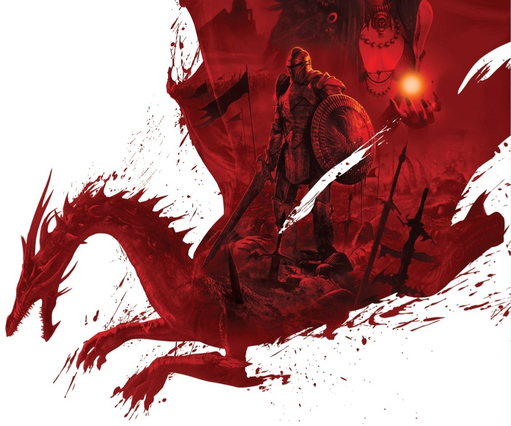

Sample text in p
 Dragon Age is a media franchise centered on a series of fantasy role-playing video games created and developed by BioWare, which have seen releases on the Xbox 360, PlayStation 3, Microsoft Windows, OS X, PlayStation 4, and Xbox One. The franchise takes place on the fictional continent Thedas, and follows the experiences of its various inhabitants. The first game in the series, Dragon Age: Origins, follows the story of a recent recruit to a legendary order of warriors known as the Grey Wardens. Their mission is to save the kingdom of Ferelden from being overrun by the Darkspawn, a monstrous race of subterranean-dwelling beings who swarm the surface world every few hundred years in a movement known as a Blight. A Blight begins when the darkspawn track down and awaken an Archdemon, a powerful dragon that controls the Darkspawn hordes. Its sequel Dragon Age II is centered around the eldest child of the Hawke family, a Blight refugee who moves their family to their mother's home city of Kirkwall in The Free Marches. There, over the course of approximately seven years, they begin as a criminal and work their way up the city's power structure to eventually become the Champion of Kirkwall. As such, in the midst of crisis and political unrest, they go on to help make decisions that influence all of Thedas. A third installment, Dragon Age: Inquisition centers on the Inquisition, an organization tasked with restoring peace and order to Thedas, which is suffering from multiple wars and being ravaged by a demonic invasion from beyond the mortal realm over a decade after the events of the first game. The Herald of Andraste, who later becomes the Inquisitor, is the only individual who can seal the rifts that bring demons to Thedas, due to a mysterious magical mark on their hand. They also help to bring peace to the political landscape. All three main series games have been joined by a variety of expansions and downloadable content (DLC) add-ons. A fourth installment, Dragon Age: Dreadwolf, is currently under development. The main series games have all met with commercial success as well as mostly positive acclaim for its narrative, universe lore, character development, voice acting, and emphasis on player choices affecting the experience. In addition to video games, the franchise has expanded to other media and now spans multiple spin-off games, novels, graphic novels and comic books, webseries, an anime film and an animated television series, as well as other licensed products and merchandise.